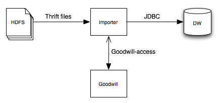

Goodwill-access library
- About

Goodwill-access is a Java library to access Schemata stored in Goodwill. See the FAQ to get started.
Let's say you store in HDFS data serialized using the Thrift protocol and you want to dynamically export this data into a Data Warehouse. This can be a tricky process. For instance, what SQL type maps to an i64? bigint, timestamp and date are valid candidates. How would you choose?
After documenting your Schema in Goodwill, you could write an import process that fetches the raw data from Hadoop, query Goodwill for the Thrift schema and metadata associated, deserialize and transform the Thrift according to it and insert it into the Data Warehouse via a JDBC driver:
